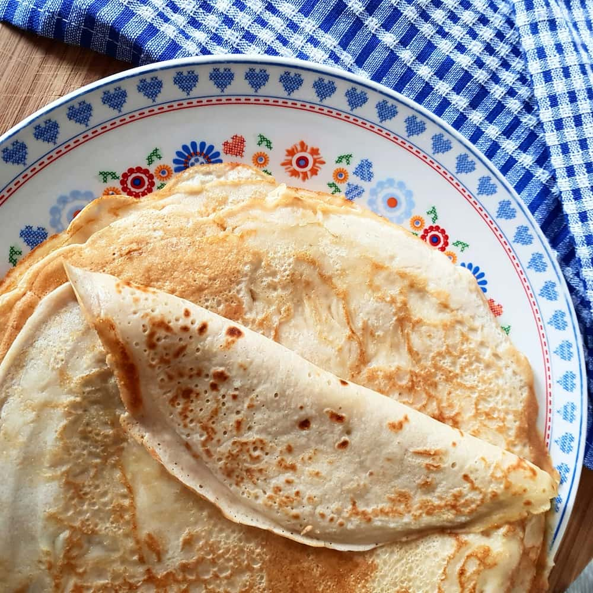

Les crêpes sont la premiére recette sucré que j'ai appris à cuisiner avec ma cousine. Je les prépare souvent dans les vacances.
Cette recette est trés simple, ne demande presque aucun matériel. elle est aussi trés economiquecar en utilise seulement des produit de base.